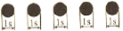
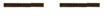

| 171. Намирате се в теснина или фарватер и чувате два продължителни и един къс звук: |
|
"Имам намерение да ви изпреваря от левия борд" "Имам намерение да ви изпреваря от десния борд" "Изменям своя курс на дясно" "Изменям своя курс на ляво" |
| документ регламентиращ правилния отговор: GOLREG (rule34/c/9/e) |
| 172. Намирате се в теснина или фарватер и чувате един продължителен, един къс, един продължителен и един звук: |
|
"Съгласен съм да бъда изпреварен" "Изменям своя курс на дясно" "Нямам ход относно водата" "Изменям своя курс на ляво" |
| документ регламентиращ правилния отговор: GOLREG (rule34/c/9/e) |
| 173. Корабите са във видимост и се сближават, чувате най малко пет къси сигнала:  |
|
"Не разбирам вашите действия, взетите от вас мерки за избягване на сблъскване не са достатъчни" Сигнал за бедствие "Нямам ход относно водата" "Нямам управление" |
| документ регламентиращ правилния отговор: GOLREG (rule34/d) |
| 174. В теснина или фарватер подавате един продължителен звук Какво означава?: |
|
"Буксирам друг кораб" "Изменям своя курс на дясно" "Може да не виждам друг кораб поради завой или препятствие" "Нямам ход относно водата" |
| документ регламентиращ правилния отговор: GOLREG (rule34/e) |
| 175. При ограничена видимост чувате един продължителен звук през интервал около 2 минути: |
|
Кораб с мех. двигател, движи се относно водата Кораб, без управление Влачен кораб Кораб, ограничен в способността си да маневрира |
| документ регламентиращ правилния отговор: GOLREG (rule35/a) |
| 176. При ограничена видимост чувате два продължителени звука през интервал около 2 минути:  |
|
Кораб с мех. двигател, движи се относно водата Кораб, без управление Кораб с мех. двигател, няма ход относно водата Кораб, ограничен в способността си да маневрира |
| документ регламентиращ правилния отговор: GOLREG (rule35/b) |
| 177. При ограничена видимост чувате един продължителен и два къси звука през интервал около 2 минути: |
|
Кораб с мех. двигател, движи се относно водата Влачен кораб Кораб, ограничен в способността си да маневрира Кораб с мех. двигател, няма ход относно водата |
| документ регламентиращ правилния отговор: GOLREG (rule35/c) |
| 178. При ограничена видимост чувате един продължителен и два къси звука през интервал около 2 минути: |
|
Кораб с мех. двигател, движи се относно водата Влачен кораб Кораб с мех. двигател, няма ход относно водата Кораб, без управление |
| документ регламентиращ правилния отговор: GOLREG (rule35/c) |
| 179. При ограничена видимост чувате един продължителен и два къси звука през интервал около 2 минути: |
|
Кораб, ограничен от своето газене Кораб с мех. двигател, движи се относно водата Влачен кораб Кораб с мех. двигател, няма ход относно водата |
| документ регламентиращ правилния отговор: GOLREG (rule35/c) |
| 180. При ограничена видимост чувате един продължителен и два къси звука през интервал около 2 минути: |
|
Кораб с мех. двигател, движи се относно водата Ветроходен кораб Кораб с мех. двигател, няма ход относно водата Влачен кораб |
| документ регламентиращ правилния отговор: GOLREG (rule35/c) |